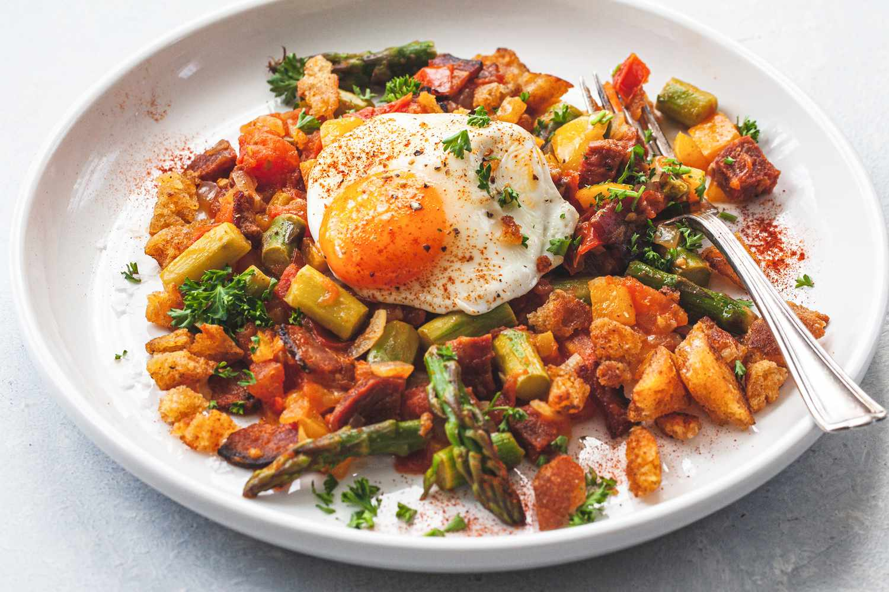

Migas is a traditional, ancient dish in Spanish and Portuguese cuisine. At its base, it is made from softened bread cooked in fat. Its name, migas, is literally translated to crumbs, referring to its key ingredient - breadcrumbs. Although migas is a highly caloric meal, it is often praised as great winter food that is extremely flavorful and easy to prepare.
Meal prep time : 20 minutes
Servings : 4-6